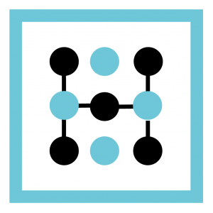
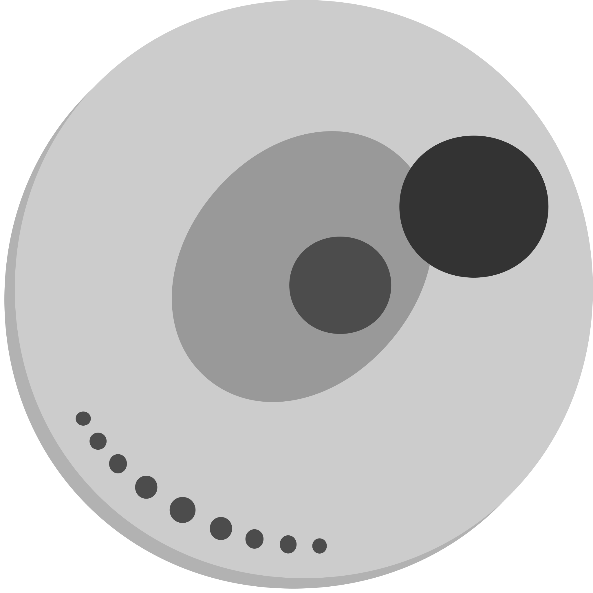

Adrian Castro
München, Germany | Italian (C2), Spanish (C2), English (C1), German (A2), French (A2)
Experience
Tacto GmbH, 09/2023 - Present
 Data Engineer
Data Engineer
- Leading the company to be data-driven
- Building a data platform from the ground-up on Azure
IONITY GmbH, 09/2022 - 08/2023
Data Engineer
- Led the effort of modernizing the entire data structure from the ground-up on AWS, reducing costs by 50%
- Modernized the team's development processes by introducing software-engineering methodologies, drastically reducing technical debt and increased trust in data processes
- Created CI/CD pipelines on GitLab for automated deployments of Terraform code on AWS
- Created pipelines involving Airflow, Glue and Kinesis Firehose handling hundreds of thousands of records per day coming from tens of sources within and outside our company
- Increased speed of existing pipelines by 50% to 250%
- Increased data awareness by setting company-wide standards in terms of data governance and policies
UnixMiB, 2017 - Present
Staff Board Member
- Helped to propose, organize and setup of international events
- Actively committed to Open Source community
D4L data4life gGmbH., 09/2021 - 08/2022
Software Engineer
- Led the integration of Notary for securing company's infrastructure
- Increased productivity by 30% by speeding up Jenkins pipelines and Ansible deployments
Heveloon Ltd., 10/2020 - 09/2022
 Software Engineer
- Backend development of REST APIs and integration with Blockchain applications
- Projects: AutumnWhispers Ltd. • GUNOX • Omegastations • Wide Care Services • Sisterly • Imperivm
Joleat, 2019 - 2022
Technical Co-Founder
- Pitched our company to hundreds of people
- Grew the company from 0 to 400 sales in just 6 months
- Onboarded 60+ business partners to sell on our platform
- Everything with no capital invested in marketing
BioDataAnalysis GmbH., 2020 - 08/2021
 Software Engineer
- Developed high-performance C++ internal libraries
- Worked on frontend applications with data coming from our C++ Thrift APIs
Net2Web Srl., 2017 - 2021
Full-Stack Developer
- Doubled the the monthly number of visitors from 20.000 to 40.000
- Increased speed of monolithic Java web application by 75%
- Managed tens of independent WordPress websites
Università degli studi di Milano-Bicocca, 03/2019 - 06/2019
 Internship
Internship
- Explored and developed a novel algorithm for cancer cell categorization using Particle Swarm Optimization
Bicocca Security Laboratory, 2017 - 2019
Junior Partner
- Helped to coordinate tasks for security research
- Learned about state-of-the-art security standards (GDPR)
Education
Munich, Germany, 2019 - 2022
M.Sc. Data Engineering and Analytics
University: Technische Universität München
Milan, Italy, 2016 - 2019
B.Sc. Computer Science
University: Università degli Studi di Milano-Bicocca
Events
Linux Day Milano 2019
- Event dedicated to Open Source, GNU/Linux, free software, sharing and open culture
Akademy 2019
- Organized the yearly KDE Akademy with more 200+ people with UnixMiB
MLConf San Francisco 2019
- Helped to organize the yearly MLConf in SF
FOSDEM
- Participant since 2019
Papers and Essays
(TUM)
Is This Real Life?
- An essay about the possible future implications of AI onto society.
(TUM)
Exploring and Analyzing Compression Algorithms in Preprocessing Pipelines
- A report about my work extending and testing TensorFlow with Zstandard on Machine Learning preprocessing
pipelines.
(TUM)
Model Parallelism: Challenges, State-of-the-art, and Future Directions
- A survey of current state-of-the-art in model parallelism.
Tools
(UniMiB)
PSO for Cancer Evolution
- The aim for the script is to find the optimal cancer evolution tree given an input matrix representing
cancer cells
(TUM)
WP Collect Implicit Feedback
- A WordPress plugin that tracks user clicks and path across the website, with the goal of feeding
the data to interactive recommender systems.
CDash CLI Client
- CDash API wrapper in Python.
Contributed To
Hobbies
I love to cook every kind of food and dish, you can take a look at
recipes.adct.it
for indications on how to replicate them!
I also enjoy kickboxing and piano, although the latter is more like a dead hobby. My weakness is pausing movies or TV series to explain something happening there.
I also enjoy kickboxing and piano, although the latter is more like a dead hobby. My weakness is pausing movies or TV series to explain something happening there.
Technologies and Knowledge
CI/CD
• AWS
• DevOps
• JavaScript
• Node.js
• Python
• C++
• Backend Development
• Data Engineering
• Airflow
• Batch Data Processing
• Event Processing
• Deep Learning
• Terraform
• Linux
• Unix
• Databases
• SQL
• REST APIs
• High Performance Computing
• Distributed Systems
• Microservices
• Agile Development
• Kubernetes
References
Available on request